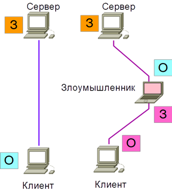
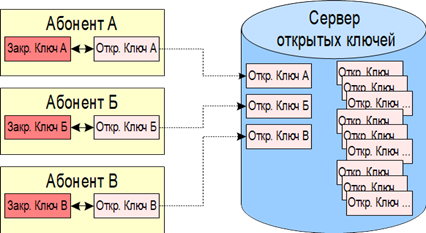
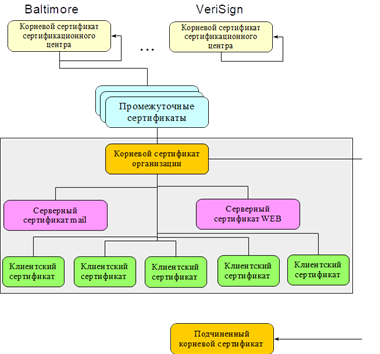
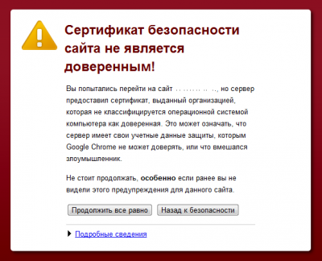

Несмотря на то, что асимметричные криптосистемы позволяют безопасно передавать данные по открытым каналам связи, для них были разработаны новые атаки, позволяющие эффективно взламывать такие алгоритмы без решения сложной вычислительной проблемы, на которой они основаны. Таким методом является атака вида «человек в середине», которая делает невозможным использование асимметричных криптосистем без проверки авторства открытых ключей. Схема этого метода представлена на рис. 5.5.
 |
Рис. 5.5. Схема атаки "Человек в середине" |
В безопасной схеме обмена, изображенной в левой части рис. 5.5, клиент непосредственно подключен к серверу, он использует открытый ключ сервера (О) для зашифрования информации и отсылке ее на сервер, который может ее расшифровать с помощью закрытого ключа (З). Но при пересылке открытого ключа сервера к клиенту с использованием по сети, он может быть перехвачен злоумышленником и подменен собственным открытым ключом. Клиент, зная открытый ключ злоумышленника, шифрует им информацию и посылает серверу.
Злоумышленник перехватывает ее, расшифровывает своим ключом, зашифровывает открытым ключом сервера и отсылает на сервер. Клиент и сервер думают, что они общаются напрямую, но между ними есть посредник, который выполняет функцию перешифрования и читает все данные пересылаемые от клиента к серверу. Для защиты от этой атаки необходимо использование методов подтверждения подлинности открытого ключа, чтобы каждый участник обмена мог удостовериться, что использует ключ именно того, кому предназначены данные. Это можно сделать с использованием ЭЦП.
Для удобства ее использования открытый ключ вместе с ЭЦП представляется в форме сертификата открытого ключа, который дополнительно может содержать идентифицирующую информацию о сертификате и используемых в нем алгоритмах. Эта информациея должна содержать следующие сведения:
− владелец сертификата;
− алгоритмы использования для генерации ЭЦП;
− срок действия;
− организация, страна, город;
− название фирмы;
− предназначение сертификата;
− зашифрованные закрытый ключ и др.
Существует несколько стандартов сертификатов открытых ключей и соответственно несколько стратегий их использования − OpenPGP и OpenSSL. Средства хранения и проверки сертификатов в каждом стандарте называются инфраструктурой открытых ключей (PKI).
Первым стандартом является стандарт OpenPGP. Он появился из формата сертификатов, использованных в популярной программе для шифрования электронной почты PGP, и используется в соответствующей программе и ее аналогах.
Разработчиком этой программы является Фил Циммерман и в период создания программы PGP он столкнулся с угрозой судебного преследования за экспорт стойких алгоритмов шифрования и программ их реализующих. Он вышел из положения написав книгу, в которой опубликовал исходный текст этой программы, таким образом программа была распространена во всем мире. Циммерман организовал компанию PGP которая разрабатывала программные средства защиты, в том числе и PGP, причем были доступны исходные коды этой программы. Программа PGP широко применялась до 2008 года, в котором компания PGP была куплена компанией «Symantek» и закрыла исходники этой программы. После этого безопасность данной программы оказалась под вопросом из-за невозможности экспертизы ее исходных кодов и она потеряла свою популярность. В качестве клона PGP существует программа GnuPG, для которой доступны исходные коды. Она портирована с Linux на Windows и является безопасным аналогом PGP.
Сертификаты в стандарте OpenPGP генерируются пользователями самостоятельно, они являются самоподписанными, но могут быть подписаны ЭЦП других пользователей. Далее пользователи загружают свои открытые ключи на специальный сервер, и тот кто хочет написать письмо некоторому абоненту должен получить с сервера его сертификат. То есть в данном случае сервер выполняет функции хранения открытых ключей (рис. 5.6). Проверка подлинности сертификатов возлагается на пользователей, она может быть выполнена путем подписи сертификата ЭЦП доверенным пользователем, которому доверяют как отправитель, так и получатель.
 |
Рис. 5.6. Инфраструктура открытых ключей стандарта OpenPGP |
Вторым стандартом сертификатов является OpenSSL. Сертификаты этого формата широко используются в сети «Интернет». Они обеспечивают шифрование сеансов и авторизацию в таких сервисах как почтовые сервера, сервера FTP, сервера WEB, в протоколе SSH и многих других.
Инфраструктура открытых ключей для данного стандарта приведена на рис. 5.7.
 |
Рис. 5.7. Структура PKI стандарта OpenSSL |
Сертификаты в данной схеме генерируются и подписываются сертификационными центрами, которым доверяют все участники информационного обмена. В свою очереди сертификаты сертификационного центра являются самоподписанными (желтого цвета на схеме). Основная цель данной структуры состоит в возможности проверить любой сертификат является ли он доверенным и каким центром был выдан. Это выполняется путем анализа иерархической цепи сертификатов, последним из которых должен являться сертификат сертификационного центра.
Сертификаты, выдаваемые центрами это товар который можно купить, они также сохраняются в базе данных вместе с данными его владельца, человека или организации. С использованием корневых сертификатов, выданных сертификационными центрами, можно сгенерировать сертификаты для различного применения.
Серверные сертификаты предназначены для шифрования трафика.
Клиентские предназначены для авторизации в различных программах, например, на WEB сайте. При этом использование сертификатов для авторизации является одним из самых надежных методов.
Корневой сертификат SSL содержит информацию о владельце и его издателе. Если посетитель перейдет на защищенный сайт, https соединение которого обеспечивается не доверенным поставщиком и его корневой сертификат отсутствует, является самоподписанным или не распознается браузером пользователя, то, как следствие, будет выдано подобное предупреждение (рис. 5.8). Данные о доверенных сайтах добавляются в базы данных современных браузеров и их можно посмотреть в настройках. Необходимо помнить, что ЭЦП сертификатов имеет юридическую силу.
 |
Рис. 5.8. Предупреждение при посещении сайта, использующего не доверенный сертификат |
Кроме генерации и хранения сертификатов пользователей и организаций центры сертификации отслеживают время действия различных сертификатов, после окончания которого сертификат становится недействительным. Сертификационный центр может отозвать сертификат (сделать его недействительным) в случае изменения данных его владельца или компрометации закрытого ключа сертификата. «PKI оказывается весьма полезна в таких приложениях, как аутентификация, обеспечение целостности и фиксация авторства, строгое выполнение обязательств, а также идентификация и поддержка конфиденциальности, − утверждает Кален Кинг, менеджер по маркетингу продуктов PKI компании Baltimore Technologies. − Шифрование, безусловно, необходимо, но оно имеет второстепенное значение».
Таким образом можно утверждать, что с использованием инфраструктуры открытых ключей можно не только защититься от атаки «человек в середине», но использовать ее для решения других важных задач.